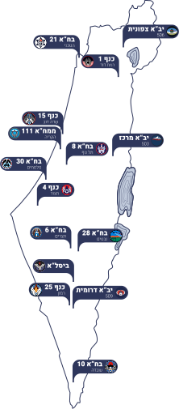

<div class="header-container" *ngIf="item">
    <h1>קורס <span>{{item.CourseNumber}}</span></h1>
    <h2>{{item.CourseName}}</h2>
</div>

<div class="course-grid" *ngIf="item">    
    <div class="course-output">
        <h4>{{item.CourseDescription}}
        <span>משך ההכשרה- {{item.CourseTime}}</span></h4>
    </div>
    
    <object #mapObject type="image/svg+xml" class="map" [class.map__size]="changeMap" data="assets/images/map_tmp7.svg"></object>
    
    
    <h4 class="bases-grid">הבסיסים בהם ניתן לשרת הם- 
        <span *ngFor="let base of item.CourseBases">• {{base}}</span>
    </h4>
    
    <div class="youtube-container">
        <iframe class="youtube-video" [src]="item.YouTubeURL | safe"></iframe>
    </div>
</div>
